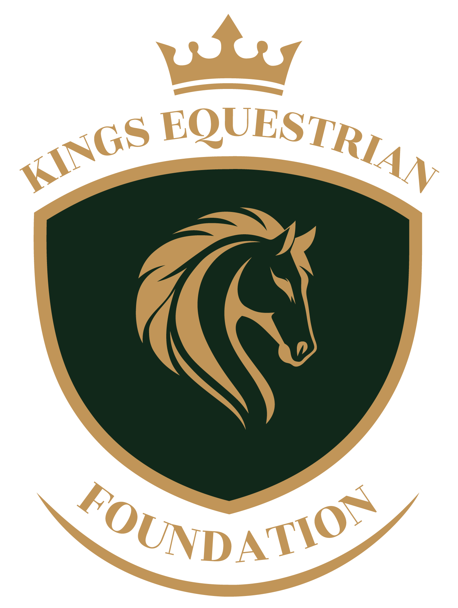
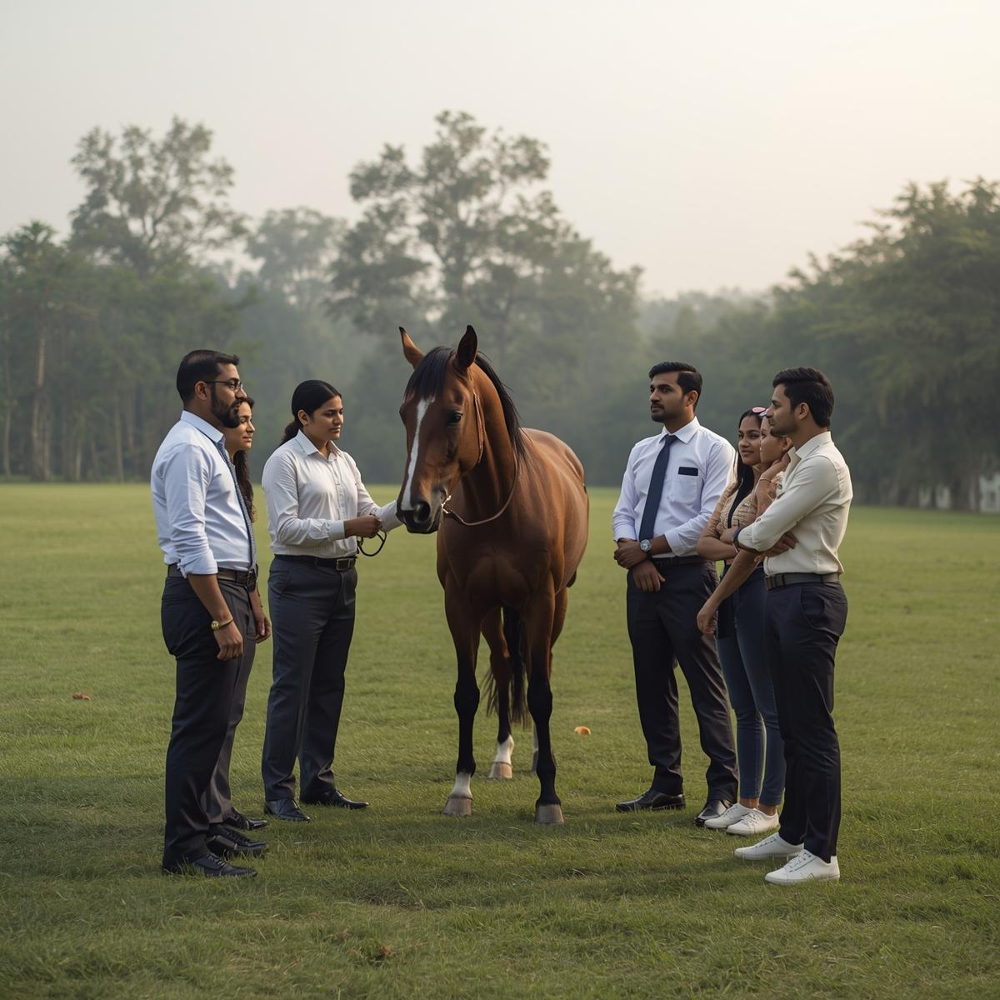

High-impact experiential programs designed for corporate teams, leadership groups, and learning initiatives.

Horses are highly sensitive to human intention, emotional state, and clarity. Their natural responsiveness makes them powerful partners for developing authentic leadership, trust, and communication.
Horses respond in real time to a leader’s presence, focus, and intent. This creates instant awareness of how one’s behaviour impacts others.
Leadership is experienced, not explained. Participants learn through guided interaction rather than classroom instruction or role play.
Insights gained through embodied experience are deeply internalised, leading to measurable shifts in leadership and team behaviour.
These experiences are carefully facilitated and directly linked to real workplace challenges, ensuring relevance and practical application.
Improve communication clarity and timing, and strengthen your ability to influence others.
Deepen self-awareness and learn how to shift ineffective leadership behaviours by aligning emotions and energy with purposeful action.
Build trust and alignment while developing collective leadership and collaboration skills.
Gain insight into emotional intelligence and its impact on leadership effectiveness, relationships, and team productivity.
Bring greater focus and clarity to your leadership through practices that support presence and intentional action.
Equine-Assisted Learning (EAL) is an evidence-inspired, experiential leadership approach where participants engage with horses in purpose-designed exercises. Unlike traditional classroom training, horses provide immediate, non-verbal feedback that reveals leadership style, presence, and communication in real time.
By working with horses — animals that respond instinctively to human behaviour — leaders develop heightened awareness of non-verbal communication, trust-based influence, and embodied leadership skills that translate directly into workplace performance.
Participants leave with practical insights and behavioural shifts that directly influence leadership effectiveness and team performance.
Develop clarity in communication, sharpen active listening, and heighten awareness of non-verbal signals that influence teams.
Strengthen trust, accountability, and alignment by experiencing trust-based engagement in real time.
Build calm leadership presence, emotional regulation, and confident decision-making under pressure.
Every engagement is customised based on your leadership challenges, team dynamics, and organisational objectives.
Equine-Assisted Learning follows a structured experiential cycle that transforms insight into practical leadership behaviour.
Participants enter guided exercises with horses where outcomes depend on presence, clarity, and intention.
Horses respond instantly and honestly, revealing how leaders communicate, influence, and “show up.”
Facilitated reflection helps participants interpret what the horses revealed and why it matters.
Insights are translated into workplace leadership, communication, decision-making, and team dynamics.
Experiential, embodied learning approaches — such as Equine-Assisted Learning — accelerate insight and behavioural change more effectively than traditional classroom-based training.
By engaging emotional, physical, and cognitive dimensions simultaneously, participants do not just understand leadership concepts — they experience them in real time. This leads to deeper awareness, stronger retention, and more sustainable changes in leadership behaviour back at work.
Every engagement is thoughtfully customised to your leadership goals, team dynamics, and organisational context.
Kingsfarm programs are conducted at our private countryside campus, offering a calm, focused environment ideal for leadership and team development away from city distractions.
Kingsfarm Equestrian